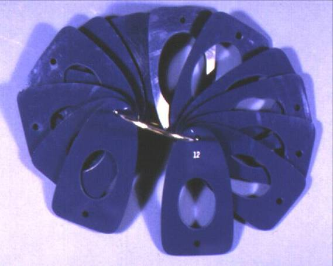

Introduction
Varicocele management was historically recognized as an adult problem, observed in nearly 15% of the adult male population (Saypol 1981). Later, it was observed that men presenting for infertility work-up showed a higher percentage of varicoceles—one-third of all men evaluated for infertility, representing 15-20% of all men with varicoceles (Pryor and Howards, 1987). When those varicoceles were surgically corrected, resulting in improved sperm characteristics as well as pregnancy rates, a causative relationship between varicocele and infertility was suspected. With ongoing studies to confirm, varicocelectomy has become standard practice for the adult male noted to have a varicocele when seeking treatment in an infertility clinic. Since in the mid-1980s it has been accepted that these varicoceles begin in adolescence and puberty, don’t spontaneously disappear, and, when operated on, can reverse testicular growth retardation (Kass and Belman, 1987). However, given the high prevalence in the adult male population (15%), and of those, only 15-20% seeking treatment in infertility clinics, the dilemma for the practitioners who care for adolescent males is how to predict the future—who will eventually have problems with infertility and therefore who might benefit from varicocelectomy sooner rather than later in life, or not at all. This chapter will discuss more fully the factors related to this dilemma so that each practitioner or student can better understand how to personalize the care for each patient with a varicocele.
Definition
A varicocele is an abnormal enlargement of scrotal veins draining blood from the testis. A classification system is traditionally used to describe the severity. A subclinical varicocele, or Grade 0, is one not appreciated on physical exam but found serendipitously on scrotal ultrasound. Grade 1 varicoceles can not been seen, but are palpated on exam as swelling in the scrotal veins observed only with Valsalva effort, hence, enhancing retrograde venous flow. Grade 2 varicoceles are those veins which are palpably enlarged with no need for Valsalva maneuvers, but cannot be visualized through the scrotal skin. Grade 3 varicocele refers to visualization of the engorged veins through the scrotal skin with no manipulation nor additional Valsalva pressure (Dubin & Amelar, 1970; Figure 1).
Epidemiology
Varicocele is highly prevalent in adult male society; approximately 15% of men have one. The appearance of varicocele on physical exam is largely a post-pubertal phenomenon, and the incidence of varicocele increases with age. In a Danish study published in 1971, on routine school physical of 188 boys aged 6-9 years old, none showed varicocele (Oster 1971). According to this study, as well as numerous others the incidence of varicocele increases to 16% through the years of puberty (Horner, 1960; Steeno et al, 1976; Yerokhin, 1979; Berger, 1980; D’Ottavio et al, 1981). The reported incidence is dependent on the researchers’ definition of varicocele—whether grade 1 was included or not—and also on the mode of diagnosis, specifically, physical exam versus Doppler ultrasound exam. When a combination of physical exam with concurrent color Doppler ultrasound exam to determine retrograde venous flow was used to examine German school boys in 1998-99, the prevalence of varicocele on physical exam combined with color Doppler ultrasound in adolescents aged 12-18 years was as high as 42.8% (Pfeiffer, 2006). These numbers are not representative of what tertiary care centers in the United States are observing. To date, there are no clear definitions as to minimal requirements of retrograde flow on Color Doppler ultrasonography, nor number of dilated veins, to define varicocele. [ASEEM—this is where Harriet Paltiel’s 4 ultrasound pictures would probably be best.]
Most varicoceles are found on the left side only—85-90% of the time. Generally, when a right-sided varicocele is appreciated, it is only in association with a left-sided varicocele. Bilaterality is observed 10% of the time. Rarely, a varicocele occurs exclusively on the right side, which should prompt an ultrasound of the retroperitoneum to rule out a mass lesion. While ethnicity appears to affect testis size, it does not appear to affect the frequency of varicocele.
The prevalence of each grade of varicocele for adolescents is difficult to truly understand. It was reported as 60% grade 1, 27% grade 2, and 13% grade 3 (Niedziedlski, 1997), but detection of varicocele depends on proper screening at physical exam or the patient complaining of a new finding on self-exam. While many have suggested that grade of varicocele is more commonly found in older patients, this does not necessarily mean that varicocele grade worsens with age. When an individual patient is observed, infrequently will his grade of varicocele change with time.
Anatomy
The testis has three main sources of blood supply: the testicular artery, the artery of the vas deferens, and the cremasteric artery. Once within the testis, there is communication of arterial blood. The venous drainage, as in many areas of the body, is less predictable. A myriad of veins exist at the scrotal and groin levels to drain the testis. The most extensive network is known as the pampiniform plexus which begins adjacent to the testis and extends into the groin with the spermatic cord (Wishahi, 1991). Part of the function of this network of veins is to cool the neighboring arterial blood from a core body temperature of 37˚C to the scrotal temperature of 33˚C by a counter-current heat exchange process (Turner, 1982). The existence of varicocele, in theory, causes pooling of blood and therefore proves an ineffective cooling mechanism.
The distal most portion of the pampiniform plexus is drained by the anterior scrotal vein into the femoral vein. The four main sources of drainage, however, are the testicular, vasal, cremasteric, and external pudendal veins. The vasal vein empties into the inferior vesical vein and eventually the internal iliac vein. More proximal drainage of the plexus is into the cremasteric veins, which empty into the inferior epigastric vein and eventually the external iliac vein. The main drainage of the pampiniform plexus is the testicular vein, which drains directly into the left renal vein on the left, and into the inferior vena cava on the right. The anatomic relationship on the left requires a slightly longer vein, which has given rise to the reason for the predominance of varicocele on the left.
Clinical Presentation & Diagnosis
Most often in adolescent males, a varicocele is found on a routine sports or school physical exam by the health practitioner who performs an informed genital exam. Sometimes a post-pubertal patient notes a new scrotal mass or swelling, or complains of a dull, bothersome discomfort in the scrotal region, especially after exercise or prolonged standing. Generally, the scrotal swelling associated with varicocele is painless. The clinical examination of any adolescent male’s genitals should be performed while the patient is standing, ideally in a warm room. Many varicoceles would be missed if the patient is examined in the supine position because the dilated veins collapse.
As noted previously, Grade 3 varicocele will be obvious on visual inspection of the scrotum as distensions of tissue, sometimes quite large, in the area of the spermatic cord. In the absence of this, the spermatic cord should be palpated above the level of the testis, where a palpable varicocele (Grade 2) has been described as feeling like a bag of worms or a series of squishy soft tubes. To detect Grade 1 varicocele, with the spermatic cord between the practitioner’s thumb and forefingers, the patient should be asked to cough or to bear down to produce a Valsalva effect. Grade 1 varicocele will produce a filling sensation between the practitioner’s fingers. The physical exam of the spermatic cord should be completed with the patient in the supine position, confirming that the dilated veins disappear (as a solid mass would not).
If a varicocele has been observed on physical exam, testicular size or volume should be measured, looking for size discrepancy between the two sides. On palpation one can most effectively gauge whether the right and left sides are grossly symmetric. A prepubertal testis should have a volume of 1-3 milliliters. A size of >3 ml indicates the initiation of puberty, and this enlargement generally begins before any sign of pubic hair.
For adequate volume calculation, however, a number of devices have been developed for office use such as the Prader orchidometer, which is a string of ovoid-shaped beads of increasing sizes, and the Rochester (Takihara) orchidometer, which is a ring filled with small cards with open spaces punched out to accommodate the shape of a testis (Figure 2). Some practitioners use rulers, others use calipers. For many, the most reliable method for volume calculation is scrotal ultrasound which has been demonstrated to be a more reliable method than the orchidometers (Diamond, 2000). If using a two-dimensional measuring system, the testis volume (in milliliters) is calculated by multiplication of the width x length x depth (in centimeters) by a constant, such as 0.71 as determined by Lambert, to avoid complicated calculus formulas. The choice of Lambert’s formula was investigated by pediatric radiologists and determined to be the most accurate (Paltiel, 2002).
Ultrasound has been demonstrated on animal studies to have the best correlation with actual testis size (Paltiel, 2002). Ultrasound and Prader orchidometer have a strong correlation, but the correlation was directly related to the investigator’s clinical experience (Behre, 1989). Another small study of adolescent boys (n=22) compared use of the Prader orchidometer to ultrasound, and unfortunately 24% of the boys with testicular hypotrophy would have been missed by their Prader examination alone (Costabile, 1992). In the same study, three patients were thought to have a size discrepancy of >2 milliliters, but were found to be equivalent on ultrasound.
Also, it is important to remember that the adolescent testes do not grow at exactly the same rate. When boys with varicocele were followed with yearly ultrasounds due to a 15% size discrepancy, the majority showed resolution of their size discrepancy which was durable with time (Kolon 2008). For the adolescents in that particular study, this meant that 51-71% were not recommended surgical correction of their varicocele, which may have been suggested if one static measurement had been taken. Hence, the authors strongly recommend at least two sequential ultrasounds (ideally 6-12 months apart) documenting testes size before the decision is made to proceed with surgery.
Pathophysiology
As discussed previously, the anatomic aspect of a varicocele is abnormal dilation of the veins draining the testis, animal models of which have been created by partial ligation of the left renal vein (Saypol, 1981). How this dilation eventually results in testicular damage is still a point of academic discussion. Several mechanisms have been suggested: hyperthermia, hypoxia, adrenal reflux, endocrine imbalances, testicular paracrine imbalances, and altered blood flow. We will discuss below the mechanisms that have substantial support.
The hyperthermic effect has been discussed previously in this chapter with the counter-current heat exchange mechanism of the pampiniform plexus, which is disrupted with varicocele. The resultant hyperthermia affects DNA polymerase activity in germ cells for DNA replication, as well as protein synthesis in round spermatids, both of which are temperature sensitive with optimal function at 33˚C and 34˚C, respectively (Fujisawa, 1988; Fujisawa, 1989). This inability for germ cells to reproduce could then explain the reduced spermatogonia cells observed on testis biopsy of young varicocele patients (Hienz, 1980). Sertoli cells are potentially affected by the higher temperature as well (Sofikitis, 1992).
The endocrine imbalances are more complicated, with discrepancies between animal models and humans between serum testosterone levels, gonadotropin-releasing hormone (GnRH) challenge responses, luteinizing hormone (LH) and follicle-stimulating hormone (FSH) levels (Skoog, 1997). Neither the Leydig nor the Sertoli cells appear to function optimally in the testis adversely affected by a varicocele (Rajfer, 1987). Intratesticular testosterone levels could have an adverse effect on spermatogenesis, as could poor Sertoli cell responsiveness to FSH stimulation, or their altered production of inhibin as well as transferrin (Plymate 1992; Griswold, 1988). Furthermore, it is unclear whether these endocrine effects are due to the presence or absence of the hormone, per se, or a local dilutional effect in the increased venous volume.
Changes in blood flow to the testis may be a way to explain all of the other dysfunctions. Evidently, the blood pressure within the testis is relatively low compared to other compartments of the body. With even slight increases in the post-capillary pressures, the interstitial spaces can become flooded (Sweeney, 1991). In that environment, neither Leydig nor Sertoli cells can function properly, which in turn affects the health of the spermatogonia which are already adversely affected by the rise in temperature. The difficulty in fully accepting alterations in pressure due to altered blood flow as the causative mechanism is the fact that bilateral deleterious effects have been observed, despite the pressures in the right testis being unaffected when the left testis pressures are high. Venograms clearly demonstrate the communications between the two venous systems via the right testicular vein in many patients with varicocele, hence something abnormal could be delivered from the affected left side to the unaffected right side (Narayan et al, 1981). Also, temperature could explain the bilateral deleterious effects as the warmer left testis sits in close proximity to the right testis, which is warmed slightly (Goldstein, 1989).
The endpoint of this pathophysiology is poor testis growth. This is referred to as hypotrophy. On testis biopsy, the poor growth is seen in all cell types of the testis, but primarily with the germ cells and Sertoli cells (Kass, 1987; Hienz, 1980). The Leydig cells’ appearance varies widely from atrophy to hypertrophy (Hienz, 1980). The eventual result, not surprisingly, is poor sperm production as demonstrated on semen analysis in young men who have testicular hypotrophy with concurrent varicocele (Haans, 1991).
Management
Once a diagnosis of varicocele is made on clinical exam, calculation of testis volumes is highly recommended with scrotal ultrasound. If no size discrepancy is noted, and the patient has no bothersome symptoms, it is reasonable to follow with yearly physical exam and scrotal ultrasound to monitor testis growth through puberty. Once the patient completes puberty, semen analysis should be offered to confirm appropriate sperm count and motility. This recommendation is regardless of varicocele grade, as hypotrophy and eventual semen parameters are not related to grade of varicocele, which has been long established in the adult subfertile population (Dubin and Amelar, 1970).
While well established in the infertile adult population that testicular hypotrophy adversely affects semen parameters, only recently in the adolescent population have size differential criteria been established to predict likely sperm dysfunction. Historically, a difference of 2-3 ml or more was considered to represent significant testicular volume loss, and corrective surgery would result in catch-up growth of 80% of those testes (Costabile, 1992). Others used a percentage of volume differential as a cutoff for surgical intervention, ranging anywhere from 10-25%. Data supported these decisions in that “catch-up” growth was appreciated in the hypotrophic testis post-surgical correction. The eventual of goal of fertility, however, was not known for adolescent boys. To investigate what percentage volume difference between the two testes resulted in substantially different semen parameters, 57 adolescent males who had reached Tanner stage 5 of pubertal development and who were willing to provide a sperm sample for analysis were evaluated (Diamond, 2007). Semen analysis consisted of total sperm count, sperm motility, and sperm concentration. By comparing three volume differential groups: <10%, 10-20%, and >20%, the sperm concentration was significantly lower in the 10-20% and the >20% groups as compared to the <10% group. The percent sperm motility was significantly lower in the >20% differential group as compared to the <10% and 10-20% groups. The total sperm motility was also significantly lower in the >20% differential group as compared to the <10% group. Overall, the authors concluded that any adolescent male with >10% volume differential between his testicles is potentially at risk for having sperm motility problems, which could potentially be a marker of which boys would be at future risk of infertility and hence warrant close surveillance with serial semen analysis or corrective surgery. These risks are greater for volume differentials exceeding 20%.
Surgical Approaches
A variety of surgical techniques have been described and studied in the management of varicocele. Conceptually, the surgical approaches can be divided into those which disrupt venous drainage above versus below the internal inguinal ring. The ultimate goal of surgery is to eliminate the varicocele but also to minimize risk to the patient of complications such as recurrence of varicocele, formation of hydrocele or atrophy to the testis. While some risk of recurrence and hydrocele exists for all surgical approaches, no report of testis atrophy in a surgically naïve patient exists in the medical literature for an approach which divides the spermatic veins above the level of the internal inguinal ring where one can more reliably avoid damage to the vas deferens and deferential vessels (Figures 3, 4).
Starting with approaches below the level of the internal inguinal ring, Ivanissevich described a repair similar to the approach of a standard inguinal hernia repair. This involves a skin incision lateral to the pubic symphysis, above the external inguinal ring. Dissection is carried down to define the inguinal ligament, followed by opening the external inguinal ring and external oblique fascia, and mobilizing the spermatic cord over a Penrose drain for visualization of the dilated veins (Figure 5). Loupe magnification, as well as patient positioning in reverse Trendelenburg, may sometimes help with identification of the dilated veins. Once the vas deferens is carefully isolated along with the ilioinguinal nerve, the veins are carefully identified and divided. Ideally, the spermatic artery is preserved, if it can be identified, sometimes with the help of warm saline, papaverine, or a hand-held Doppler ultrasound. The failure or recurrence (some say persistence) rate of varicocele for adolescents for this approach is 16%. The most common complication of any varicocele repair is the development of scrotal hydrocele, and for this approach, hydrocele is reported 3-8.6% of the time (Dubin and Amelar, 1977; Ross and Ruppman, 1993; Kass and Marcol, 1992). Presumably, the formation of a hydrocele is due to ligation of the lymphatic channels in the cord.
The subinguinal or inguinal microscopic approach has become the approach of choice for the adult infertility surgeon (Marmar and Kim, 1994; Goldstein et al, 1992) and has gained ground amongst some pediatric urologists as well. The skin incision is made directly below the external ring but the external ring is left intact. The spermatic cord is fully delivered, with or without the testis, and supported in the surgical field utilizing a Penrose drain. With microscopic magnification, identification and preservation of the testicular artery as well as lymphatic channels can be more easily achieved. This has resulted in a low recurrence rate, around 2%, and the lowest hydrocele rate of <1%.
There are two well established surgical approaches for control of the varicocele above the level of the internal inguinal ring. The Palomo procedure is an open surgical approach, but access is achieved more proximally on the spermatic vessels than with the Ivanissevich approach. The skin incision is made a fingerbreadth medial to the anterior superior iliac spine and a fingerbreadth above the estimated position of the internal ring. A muscle splitting approach is used to enter the retroperitoneal space, where the spermatic vessels can be seen coursing along the posterior peritoneal wall (Figures 6, 7). As the vas deferens is entering the internal ring well below this exposure, the ligation of the vessels can be performed easily in the slim adolescent boy without risk of vassal injury. When efforts have been made to preserve the artery, the failure rate has been reported to be 13.6%, but when the artery and vein are ligated together, the failure rate is less than 2%. Hydrocele formation occurs in approximately 7% of these males (Szabo and Kessler, 1984; Reitelman et al, 1987). While taking the spermatic artery appears intuitively dangerous to the eventual health of the testis, follow-up studies of both artery-preserving and artery-dividing groups and the compensatory growth is comparable. (Atassi, 1995)
Laparoscopic varicolectomy is similar to the Palomo procedure in that ligation of the spermatic vessels occurs at the same level (Figure 8). Advantages to laparoscopic surgery are the minimally invasive, small incisions made for a camera port in the umbilicus and two additional 3-5 mm ports for a clip applier and dissecting graspers. Also, laparoscopy offer optical magnification for ease and speed of surgery, as well as a fast recovery for most patients. The success rate has been reported to be similar to the Palomo procedure, but some report even better outcomes, with only 1% failure rate and no complications. (Poddoubny, 2000).
Interventional radiologists have also successfully corrected varicoceles, utilizing sclerotherapy or embolization of spermatic veins, and by definition avoiding the arterial supply and lymphatics. This can be performed on adults under local anesthesia, which is clearly an advantage, but the failure rate varies widely, from 5-20% (Clarke et al., 2001; Mazzoni et al., 2001), and the hydrocele rate is higher than for other surgical approaches at about 14% (Fette and Mayr, 2000). Given the high likelihood of requiring general anesthesia for an adolescent, as well as the relatively poor recurrence and complication rates, this approach has not routinely been used for adolescent varicocele management.
From one of the authors’ experience in surgical correction of varicocele, the greatest success has been found in a combined open surgical with sclerotherapy approach. Specifically, this is a Palomo skin incision and vessel mobilization proximal to the internal inguinal ring. Loupe magnification is used. With hand-held Doppler, at least one artery is identified and isolated. An attempt is made to spare lymphatic drainage as much as possible. Then all veins are tied individually and divided, save the largest. After completion of the vein ligations, the assistant is instructed to gently squeeze above the testis along the spermatic cord as there is injection into this large vein 3% STS (sodium tetradecyl sulfate) (Lebed et al., 2008) via a 22 gauge angiocatheter to sclerose any minor feeding veins. This has been performed with success on around 30 patients, with the only complication over 3-4 years of follow-up being an episode of epididymitis versus phlebitis.
Conclusions
Management of varicocele for the adolescent patient can be challenging. Helping families understand the relatively small statistical risk of infertility for their child may seem useful, but what every individual wants to know is whether he will be in the affected group or not. With the help of testicular sizing on ultrasound, and the increasing use of semen analysis in assessing the fully-developed adolescent, the practitioner has more tools for reassurance of families and/or justification for a surgical correction.
Bibliography
Atassi O, Kass EJ, Steinert BW. Testicular growth after successful varicocele correction in adolescents: comparison of artery sparing techniques with the Palomo procedure. J Urol. 1995;153:482-3.
Behre HM, Nashan D, Nieschlag E. Objective measurement of testicular volume by ultrasonography: evaluation of the technique and comparison with orchidometer estimates. Int J Androl. 1989;12:395-403.
Berger OG. Varicocele in adolescence. Clin Pediatr (Phila). 1980;19:810-11.
Clarke SA, Agrawal N, Reidy J. Percutaneous transfemoral testicular vein embolization in the treatment of childhood varicocele. Pediatric Radiol. 2001;31:515-7.
Costabile RA, Skoog SJ, Radowich M. Testicular volume assessment in the adolescent with a varicocele. J Urol. 1992;147:1348-50.
Diamond DA, Paltiel HJ, DiCanzio J, et al. Comparative assessment of pediatric testicular volume: orchidometer versus ultrasound. J Urol. 2000;164:1111.
Diamond DA, Zurakowski D, Bauer SB, et al. Relationship of varicocele grade and testicular hypotrophy to semen parameters in adolescents. J Urol. 2007;178:1584.
D’Ottavio G, et al. Il varicocele idiopatico: considerazioni epidemiologiche e pathogenetiche. In: D’Ottavio G, Pozza D, eds. Andrologia Chirugica. Rome, Italy: Borla; 1981:77.
Dubin L, Amelar RD. Varicocele size and results of varicocelectomy in selected subfertile men with varicocele. Fertil Steril. 1970;21:606.
Dubin L, Amelar RD. Varicocelectomy: 986 cases in a 12 year study. Urology. 1977;10:446-9.
Fette A, Mayr J. Treatment of varicoceles in childhood and adolescence with Tauber’s antegrade scrotal sclerotherapy. J Pediatric Surg. 2000;35:1222-5.
Fujisawa M, Yoshida S, Matsumoto O, Kojima K, Kamidono S. Deoxyribonucleic acid polymerase activity in the testes of infertile men with varicocele. Fertil Steril. 1988;50:795-800.
Fujisawa M, Yoshida S, Kojima K, Kamidono S. Biochemical changes in testicular varicocele. Arch Androl. 1989;22:149-59.
Goldstein M, Eid J-F. Elevation of intratesticular and scrotal skin surface temperature in men with varicocele. J Urol. 1989;142:743-5.
Goldstein M, Gilbert BR, Dicker AP, Dwosh J, Gnecco C. Microsurgical inguinal varicocelectomy with delivery of the testis: an artery and lymphatic sparing technique. J Urol. 1992;148:1808-11.
Griswold MD, Morales C, Sylvester SR. Molecular biology of the Sertoli cell. Oxford Rev Reprod Biol. 1988;10:124-61.
Haans LCF, Laven JSE, Mali WPTM, Velde ER, Wensing CJG. Testis volumes, semen quality, and hormonal patterns in adolescents with and without a varicocele. Fertil Steril. 1991;56:731-6.
Hienz HA, Voggenthaler J, Weissbach L. Histological findings in testes with varicocele during childhood and their therapeutic consequences. Eur J Pediatr. 1980;133:139-46.
Horner JS. The varicocele. A survey amongst secondary schoolboys. Medical Officer. 1960;104:377-81.
Kass EJ, Chandra RS, Belman AB. Testicular histology in the adolescent with a varicocele. Pediatrics. 1987;79:996-8.
Kass EJ, Belman AB. Seversal of testicular growth failure by varicocele ligation. J Urol. 1987;137:475-6.
Kass EJ, Marcol B. Results of varicocele surgery in adolescents: a comparison of techniques. J Urol. 1992;148:694-6.
Kolon TF, Clement MR, Cartwright L, et al. Transient asynchronous testicular growth in adolescent males with a varicocele. J Urol. 2008;180:1111.
Lebed B, Packer M, Husmann D, Zaontz M. Results and complications of adolescent varicocele repair with intraoperative sodium morrhuate sclerotherapy. J Urol. 2008:180:1837-41.
Marmar JL, Kim Y. Subinguinal microsurgical varicocelectomy: a technical critique and statistical analysis of semen and pregnancy data. J Urol. 1994;152:1127-32.
Mazzoni G, Spagnoli A, Lucchetti MC, Villa M, Capitanucci ML, Ferro F. Adolescent varicocele. Tauber antegrade sclerotherapy versus Palomo repair. J Urol. 2001;166:1462-4.
Narayan P, Amplatz K, Gonzalez R. Varicocele and male subfertility. Fertil Steril. 1981;36:92-7.
Niedziedlski J, Paduch D, Raczynski P. Assessment of adolescent varicocele. Pediatric Surg Int. 1997;12:410-3.
Oster J. Varicocele in children and adolescents. An investigation of the incidence among Danish school children. Scand J Urol Nephrol. 1971;5:27-32.
Paltiel HJ, Diamond DA, Di Canzio J, Zurakowski D, Borer JG and Atala A: Testicular volume: comparison of orchidometer and US measurements in dogs. Radiology. 2002;222:114.
Pfeiffer D, Berger J, Schoop C, Tauber R. A Doppler-based study on the prevalence of varicocele in German children and adolescents. Andrologia. 2006;38:13-19.
Plymate SR, Paulsen CA, McLachlan RI. Relationship of serum inhibin levels to serum follicle stimulating hormone and sperm production in normal men and men with varicoceles. J Clin Endocrinol Metab. 1992;74:859-64.
Poddoubny IV, Dronov AF, Kowarski SL, Kornikova IN, Darenkov IA, Zalikhin DV. Laparoscopic ligation of testicular veins for varicocele in children. A report 180 cases. Surg Endoscopy. 2000;14:1107-9.
Pryor JL, Howards SS. Varicocele. Urol Clin North Am. 1987;14:499-513.
Rajfer J, Turner TT, Rivera F, Howards SS, Sikka SC. Inhibition of testicular testosterone biosynthesis following experimental varicocele in rats. Biol Reprod. 1987;36:933-37.
Reitelman C, Burbige KA, Sawczuk IS, Hensle TW. Diagnosis and surgical correction of the pediatric varicocele. J Urol. 1987;138:1038-40.
Ross LS, Ruppman N. Varicocele vein ligation in 565 patients under local anesthesia: a long-term review of technique, results and complications in light of proposed management by laparoscopy. J Urol. 1993;149:1361-3.
Saypol DC, Howards SS, Turner TT, Miller ED Jr. Influence of surgically induced varicocele on testicular blood flow, temperature, and histology in adult rats and dogs. J Clin Invest. 1981;68:39-45.
Saypol DC. Varicocele. J Androl. 1981;2:61-71.
Skoog SJ, Roberts KP, Goldstein M, Pryor JL. The adolescent varicocele: What’s new with an old problem in young patients? Pediatrics. 1997;100:112-27.
Sofikitis N, Takahashi C, Kadowaki H, et al. Surgical repair versus medical treatment of varicocele in the rat: pharmacological manipulation of the varicocelized testicle. Eur Urol. 1992;22:44-52.
Steeno O, Knops J, DeClerck L, Adimoelja A, van de Voorde H. Prevention of fertility disorders by detection and treatment of varicocele at school and college age. Andrologia. 1976;8:47-53.
Sweeney TE, Rozum JS, Desjardins C, Gore RW. Microvascular pressure distribution in the hamster testis. Am J Physiol. 1991;260:H1581-89.
Szabo R, Kessler R. Hydrocele following internal spermatic vein ligation: a retroperitoneal study and review of the literature. J Urol. 1984;132:924-5.
Turner TT, Lopez TJ. Testicular blood flow in peripubertal and older rats with unilateral experimental varicocele and investigation into the mechanism of the bilateral response to the unilateral lesion. J Urol. 1982;144:1018.
Wishahi MM. Detailed anatomy of the internal spermatic vein and the ovarian vein. Human cadaver study and operative spermatic venography: clinical aspects. J Urol. 1991;145:780-84.
Yerokhin AP. Classification and frequency of varicocele in children. Klin Khir. 1979;6:45-6.
Figure 1. Grade 3 varicocele in a 17 year old male. (Aseem—this needs an arrow drawn in to point to the varicocele.)

Figure 2. Rochester orchiometer

Figure 3. Surgical incision sites for Palomo, Ivanissevich, and sub-inguinal approaches.
Figure 4. Surgical incision sites as correlated to the venous drainage.
Figure 5. Ivanissevich approach. On left, external oblique fascia is opened, spermatic cord is isolated with Penrose drain. On right, vas deferens and deferential artery is isolated from spermatic artery and veins.
Figure 6. Palomo approach. The dashed line represents the suggested incision with close proximity to the spermatic artery and vein, well above the internal inguinal ring.
Figure 7. Palomo approach. The retroperitoneum is entered via a muscle-splitting technique. Look for the vessels on the under the peritoneal fold.
Figure 8. Laparoscopic approach. A) left spermatic vein exposed under the peritoneal fold.
B) Spermatic vein mobilized.
C) Spermatic vein divided with surgical clips.
Figure 9. Transverse gray scale image showing both testes and both
varicoceles.
Figure 10. A Sagittal gray scale image of a left varicocele.
Figure 11. Sagittal color Doppler image of a left varicocele with the
patient at rest.
Figure 12. Sagittal color Doppler image of the left varicocele with the patient performing a Valsalva maneuver, with a marked increase of flow through the varicocele.